NOTE: This page has been revised for Winter 2024, but may undergo further edits.
This second example illustrates the creating of a base map for North
America that conforms to the projection used for the
na10km_v2 data, a data set of present-day climate that
accompanies a packrat-midden database: Strickland, L.E., Thompson, R.S.,
Shafer, S.L., Bartlein, P.J., Pelltier, R.T., Anderson, K.H., Schumann,
R.R., McFadden, A.K., 2024. Plant macrofossil data for 48-0 ka in the
USGS North American Packrat Midden Database, version 5.0. Scientific
Data 11, 68. [https://www.nature.com/articles/s41597-023-02616-y].
As before, Natural Earth shapefiles are read and projected,
this time using a Lambert Azimuthal Equal-Area projection, and trimmed
to the appropriate region.
Load the appropriate packages.
Set the shapefile names, including those for global coastlines, adminstrative units (borders). (Note that these are smaller-spatial/larger-cartrographic resolution shapefiles, more appropriate for continental-scale as opposed to global-scale mapping.) Set the filenames:
# read Natural Earth shapefiles
shape_path <- "/Users/bartlein/Projects/RESS/data/RMaps/source/"
coast_shapefile <- paste(shape_path, "ne_10m_coastline/ne_10m_coastline.shp", sep="")
admin0_shapefile <- paste(shape_path, "ne_10m_admin_0_countries/ne_10m_admin_0_countries.shp", sep="")
admin1_shapefile <- paste(shape_path,
"ne_10m_admin_1_states_provinces_lakes/ne_10m_admin_1_states_provinces_lakes.shp", sep="")
lakes_shapefile <- paste(shape_path, "ne_10m_lakes/ne_10m_lakes.shp", sep="")
grat15_shapefile <- paste(shape_path, "ne_10m_graticules_all/ne_10m_graticules_15.shp", sep="")As before, query geometry types to compose object names:
# query geometry type
coast_geometry <- as.character(st_geometry_type(st_read(coast_shapefile), by_geometry = FALSE))## Reading layer `ne_10m_coastline' from data source
## `/Users/bartlein/Projects/RESS/data/RMaps/source/ne_10m_coastline/ne_10m_coastline.shp'
## using driver `ESRI Shapefile'
## Simple feature collection with 4132 features and 2 fields
## Geometry type: LINESTRING
## Dimension: XY
## Bounding box: xmin: -180 ymin: -85.22194 xmax: 180 ymax: 83.6341
## Geodetic CRS: WGS 84## [1] "LINESTRING"Read and plot the shapefiles. At a higher spatial resolution, these files will take more time to load. (Note: summary output is suppressed)
# read shapefiles
coast_lines_sf <- st_read(coast_shapefile) # note geometry type MULTILINESTRING
plot(st_geometry(coast_lines_sf), col="gray50")
admin0_poly_sf <- st_read(admin0_shapefile) # note: geometry type MULTIPOLYGON
plot(st_geometry(admin0_poly_sf), col="gray70", border="red", add = TRUE)
admin1_poly_sf <- st_read(admin1_shapefile) # note: geometry type MULTIPOLYGON
plot(st_geometry(admin1_poly_sf), col="gray70", border="pink", add = TRUE)
lakes_poly_sf <- st_read(lakes_shapefile) # note: geometry type POLYGON
plot(st_geometry(lakes_poly_sf), col="blue", add = TRUE)
grat15_lines_sf <- st_read(grat15_shapefile) # note: geometry type LINESTRING
plot(st_geometry(grat15_lines_sf), col="gray50", add = TRUE)
# filter out the small lakes
lrglakes_poly_sf <- lakes_poly_sf[as.numeric(lakes_poly_sf$scalerank) <= 2 ,]
plot(lrglakes_poly_sf, bor="purple", add=TRUE)## Warning in plot.sf(lrglakes_poly_sf, bor = "purple", add = TRUE): ignoring all but the first attribute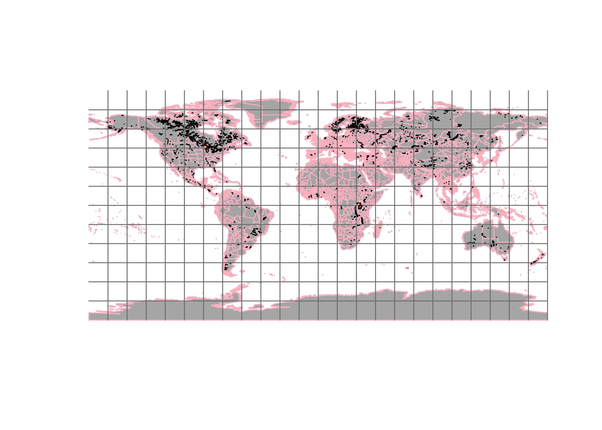
Take a look at the admin1_poly dataframe, to figure out
the codes for Canadian and U.S. provincial and state borders.
## Simple feature collection with 6 features and 65 fields
## Geometry type: MULTIPOLYGON
## Dimension: XY
## Bounding box: xmin: -70.06241 ymin: -18.0314 xmax: 74.89231 ymax: 60.48078
## Geodetic CRS: WGS 84
## scalerank featurecla LABELRANK SOVEREIGNT SOV_A3 ADM0_DIF LEVEL TYPE ADMIN
## 1 3 Admin-0 country 5 Netherlands NL1 1 2 Country Aruba
## 2 0 Admin-0 country 3 Afghanistan AFG 0 2 Sovereign country Afghanistan
## 3 0 Admin-0 country 3 Angola AGO 0 2 Sovereign country Angola
## 4 3 Admin-0 country 6 United Kingdom GB1 1 2 Dependency Anguilla
## 5 0 Admin-0 country 6 Albania ALB 0 2 Sovereign country Albania
## 6 3 Admin-0 country 6 Finland FI1 1 2 Country Aland
## ADM0_A3 GEOU_DIF GEOUNIT GU_A3 SU_DIF SUBUNIT SU_A3 BRK_DIFF NAME NAME_LONG BRK_A3
## 1 ABW 0 Aruba ABW 0 Aruba ABW 0 Aruba Aruba ABW
## 2 AFG 0 Afghanistan AFG 0 Afghanistan AFG 0 Afghanistan Afghanistan AFG
## 3 AGO 0 Angola AGO 0 Angola AGO 0 Angola Angola AGO
## 4 AIA 0 Anguilla AIA 0 Anguilla AIA 0 Anguilla Anguilla AIA
## 5 ALB 0 Albania ALB 0 Albania ALB 0 Albania Albania ALB
## 6 ALD 0 Aland ALD 0 Aland ALD 0 Aland Aland Islands ALD
## BRK_NAME BRK_GROUP ABBREV POSTAL FORMAL_EN FORMAL_FR NOTE_ADM0 NOTE_BRK
## 1 Aruba <NA> Aruba AW Aruba <NA> Neth. <NA>
## 2 Afghanistan <NA> Afg. AF Islamic State of Afghanistan <NA> <NA> <NA>
## 3 Angola <NA> Ang. AO People's Republic of Angola <NA> <NA> <NA>
## 4 Anguilla <NA> Ang. AI <NA> <NA> U.K. <NA>
## 5 Albania <NA> Alb. AL Republic of Albania <NA> <NA> <NA>
## 6 Aland <NA> Aland AI Åland Islands <NA> Fin. <NA>
## NAME_SORT NAME_ALT MAPCOLOR7 MAPCOLOR8 MAPCOLOR9 MAPCOLOR13 POP_EST GDP_MD_EST POP_YEAR LASTCENSUS
## 1 Aruba <NA> 4 2 2 9 103065 2258.0 -99 2010
## 2 Afghanistan <NA> 5 6 8 7 28400000 22270.0 -99 1979
## 3 Angola <NA> 3 2 6 1 12799293 110300.0 -99 1970
## 4 Anguilla <NA> 6 6 6 3 14436 108.9 -99 -99
## 5 Albania <NA> 1 4 1 6 3639453 21810.0 -99 2001
## 6 Aland <NA> 4 1 4 6 27153 1563.0 -99 -99
## GDP_YEAR ECONOMY INCOME_GRP WIKIPEDIA FIPS_10_ ISO_A2 ISO_A3 ISO_N3
## 1 -99 6. Developing region 2. High income: nonOECD -99 AA AW ABW 533
## 2 -99 7. Least developed region 5. Low income -99 AF AF AFG 004
## 3 -99 7. Least developed region 3. Upper middle income -99 AO AO AGO 024
## 4 -99 6. Developing region 3. Upper middle income -99 AV AI AIA 660
## 5 -99 6. Developing region 4. Lower middle income -99 AL AL ALB 008
## 6 -99 2. Developed region: nonG7 1. High income: OECD -99 -99 AX ALA 248
## UN_A3 WB_A2 WB_A3 WOE_ID WOE_ID_EH WOE_NOTE ADM0_A3_IS ADM0_A3_US ADM0_A3_UN
## 1 533 AW ABW 23424736 23424736 Exact WOE match as country ABW ABW -99
## 2 004 AF AFG 23424739 23424739 Exact WOE match as country AFG AFG -99
## 3 024 AO AGO 23424745 23424745 Exact WOE match as country AGO AGO -99
## 4 660 -99 -99 23424751 23424751 Exact WOE match as country AIA AIA -99
## 5 008 AL ALB 23424742 23424742 Exact WOE match as country ALB ALB -99
## 6 248 -99 -99 12577865 12577865 Exact WOE match as country ALA ALD -99
## ADM0_A3_WB CONTINENT REGION_UN SUBREGION REGION_WB NAME_LEN LONG_LEN
## 1 -99 North America Americas Caribbean Latin America & Caribbean 5 5
## 2 -99 Asia Asia Southern Asia South Asia 11 11
## 3 -99 Africa Africa Middle Africa Sub-Saharan Africa 6 6
## 4 -99 North America Americas Caribbean Latin America & Caribbean 8 8
## 5 -99 Europe Europe Southern Europe Europe & Central Asia 7 7
## 6 -99 Europe Europe Northern Europe Europe & Central Asia 5 13
## ABBREV_LEN TINY HOMEPART geometry
## 1 5 4 -99 MULTIPOLYGON (((-69.99694 1...
## 2 4 -99 1 MULTIPOLYGON (((71.0498 38....
## 3 4 -99 1 MULTIPOLYGON (((11.73752 -1...
## 4 4 -99 -99 MULTIPOLYGON (((-63.03767 1...
## 5 4 -99 1 MULTIPOLYGON (((19.74777 42...
## 6 5 5 -99 MULTIPOLYGON (((20.92018 59...The approprate code to extract the U.S. and Canada data is
admin1_poly$sr_sov_a3 == "CAN" and
admin1_poly$sr_sov_a3 == "US1". Extract the borders, and
plot the resulting shapefiles.
# extract US and Canada boundaries
can_poly_sf <- admin1_poly_sf[admin1_poly_sf$sov_a3 == "CAN" ,]
us_poly_sf <- admin1_poly_sf[admin1_poly_sf$sov_a3 == "US1",]
plot(st_geometry(coast_lines_sf))
plot(st_geometry(can_poly_sf), border = "red", add=TRUE)
plot(st_geometry(us_poly_sf), border = "blue", add=TRUE)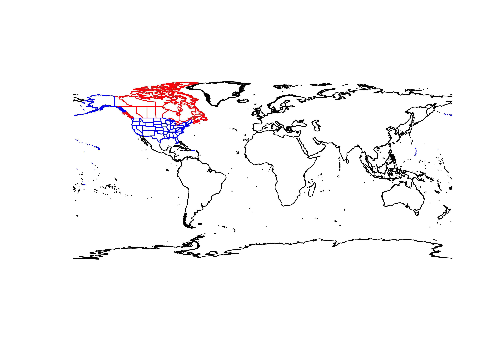
Convert the U.S. and Canada polygons to
MULTILINESTRINGS:
Set the proj4string value and the coordinate reference
system for the na10km_v2 grid:
# Lambert Azimuthal Equal Area
na_proj4string <- "+proj=laea +lon_0=-100 +lat_0=50 +x_0=0 +y_0=0 +ellps=WGS84 +datum=WGS84 +units=m +no_defs"
na_crs = st_crs(na_proj4string)Project the various shapefiles (and plot the coastlines as an example):
coast_lines_proj <- st_transform(coast_lines_sf, crs = na_crs)
admin0_poly_proj <- st_transform(admin0_poly_sf, crs = na_crs)
admin0_lines_proj <- st_transform(admin0_lines_sf, crs = na_crs)
admin1_poly_proj <- st_transform(admin1_poly_sf, crs = na_crs)
lakes_poly_proj <- st_transform(lakes_poly_sf, crs = na_crs)
lrglakes_poly_proj <- st_transform(lrglakes_poly_sf, crs = na_crs)
can_poly_proj <- st_transform(can_poly_sf, crs = na_crs)
us_poly_proj <- st_transform(us_poly_sf, crs = na_crs)
can_lines_proj <- st_transform(can_lines_sf, crs = na_crs)
us_lines_proj <- st_transform(us_lines_sf, crs = na_crs)
grat15_lines_proj <- st_transform(grat15_lines_sf, crs = na_crs)plot(st_geometry(admin0_lines_proj), col = "gray70")
plot(st_geometry(coast_lines_proj), col = "black", add=TRUE)
plot(st_geometry(grat15_lines_proj), col = "gray70", add=TRUE)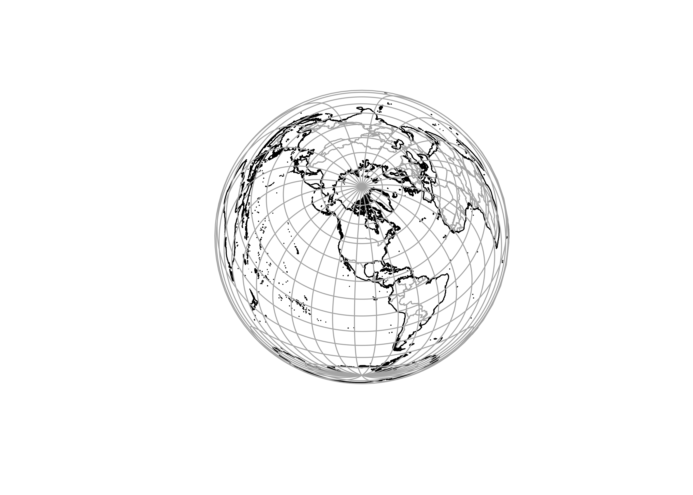
Define a bounding box for trimming the polygon and line shape files
to the area covered by the na10km_v2 grid. The extent of the area is
known from the definition of the grid, but could also be determined by
reading an na10km_v2 netCDF file. The projected admin shape
files are quite complicated, and create “topology exception errors”.
These can be fixed using an approach discussed on StackExchange [link]
# North America Bounding box (coords in metres)
na10km_bb <- st_bbox(c(xmin = -5770000, ymin = -4510000, xmax = 5000000, ymax = 4480000), crs = na_proj4string)
na10km_bb <- st_as_sfc(na10km_bb)Clip or trim the coastlines to the na10km_bb
boundary-box object, using the st_intersection()
function:
# clip the projected objects to the na10km_bb
na10km_coast_lines_proj <- st_intersection(coast_lines_proj, na10km_bb)## Warning: attribute variables are assumed to be spatially constant throughout all geometries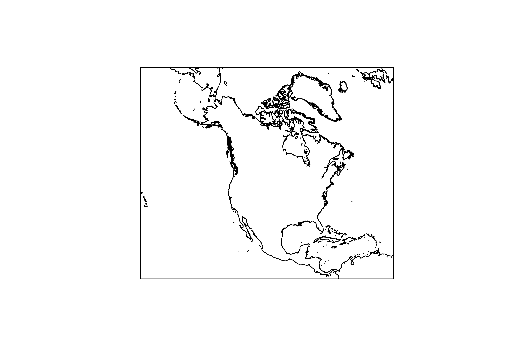
# trim the other projected objects
na10km_lakes_poly_proj <- st_intersection(lakes_poly_proj, na10km_bb)
na10km_lrglakes_poly_proj <- st_intersection(lrglakes_poly_proj, na10km_bb)
na10km_can_poly_proj <- st_intersection(can_poly_proj, na10km_bb)
na10km_us_poly_proj <- st_intersection(us_poly_proj, na10km_bb)
na10km_can_lines_proj <- st_intersection(can_lines_proj, na10km_bb)
na10km_us_lines_proj <- st_intersection(us_lines_proj, na10km_bb)
na10km_grat15_lines_proj <- st_intersection(grat15_lines_proj, na10km_bb)
na10km_admin0_poly_proj <- st_intersection(admin0_poly_proj, na10km_bb)
na10km_admin1_poly_proj <- st_intersection(admin1_poly_proj, na10km_bb)Plot the projected shapefiles.
# plot the projected objects
plot(st_geometry(na10km_coast_lines_proj))
plot(st_geometry(na10km_can_lines_proj), col = "pink", add = TRUE)
plot(st_geometry(na10km_us_lines_proj), col = "lightblue", add = TRUE)
plot(st_geometry(na10km_lrglakes_poly_proj), col = "lightblue", bor = "blue", add=TRUE)
plot(st_geometry(na10km_admin0_poly_proj), bor = "gray70", add = TRUE)
plot(st_geometry(na10km_grat15_lines_proj), col = "gray70", add = TRUE)
plot(st_geometry(na10km_bb), border = "purple", add = TRUE)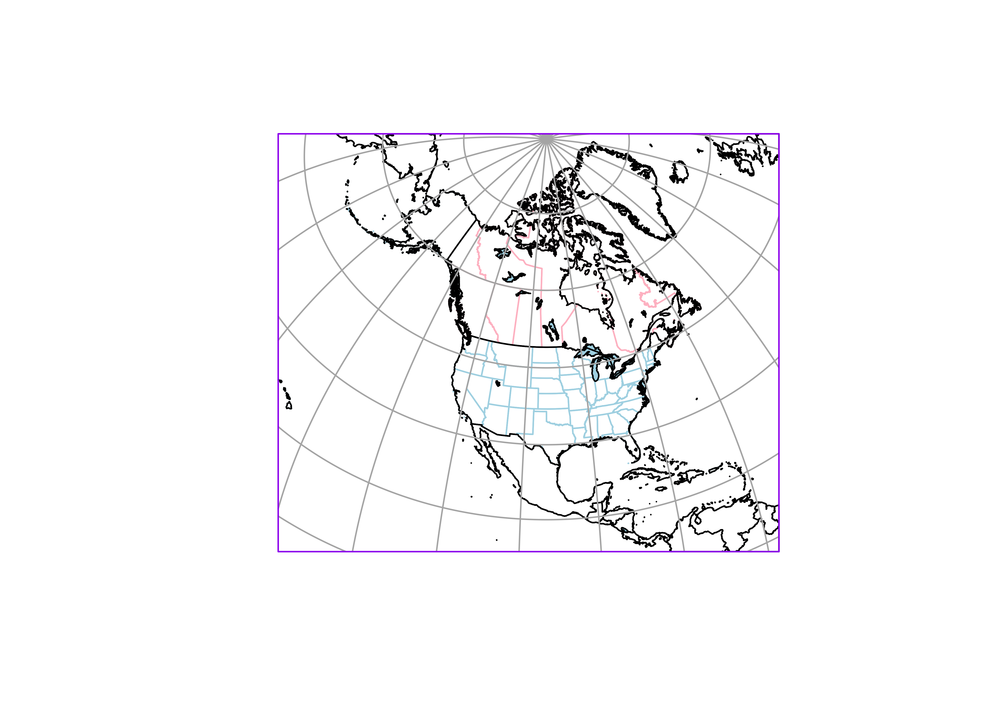
Next, write out the projected shapefiles, first setting the output path.
# write out the various shapefiles
outpath <- "/Users/bartlein/Projects/RESS/data/RMaps/derived/na10km_10m/"# coast lines
outshape <- na10km_coast_lines_proj
outfile <- "na10km_10m_coast_lines/"
outshapefile <- paste(outpath,outfile,sep="")
st_write(outshape, outshapefile, driver = "ESRI Shapefile", append = FALSE)## Deleting layer `na10km_10m_coast_lines' using driver `ESRI Shapefile'
## Writing layer `na10km_10m_coast_lines' to data source
## `/Users/bartlein/Projects/RESS/data/RMaps/derived/na10km_10m/na10km_10m_coast_lines/' using driver `ESRI Shapefile'
## Writing 1277 features with 2 fields and geometry type Unknown (any).It’s always good practice to test whether the shapefile has ideed been written out correctly. Read it back in and plot it.
## Reading layer `na10km_10m_coast_lines' from data source
## `/Users/bartlein/Projects/RESS/data/RMaps/derived/na10km_10m/na10km_10m_coast_lines'
## using driver `ESRI Shapefile'
## Simple feature collection with 1277 features and 2 fields
## Geometry type: MULTILINESTRING
## Dimension: XY
## Bounding box: xmin: -5770000 ymin: -4510000 xmax: 5e+06 ymax: 4480000
## Projected CRS: +proj=laea +lat_0=50 +lon_0=-100 +x_0=0 +y_0=0 +datum=WGS84 +units=m +no_defs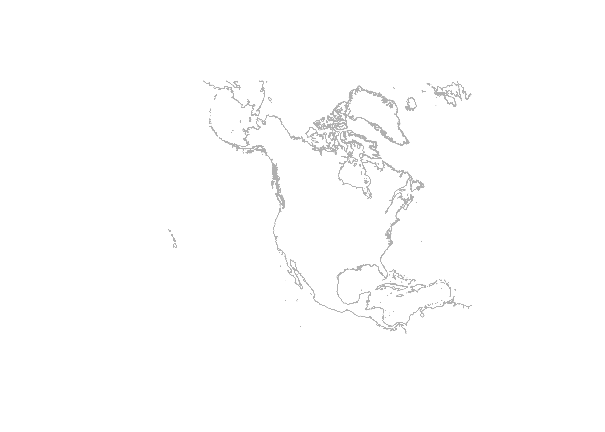
Write out the other shape files (output is suppressed):
# write out the various shapefiles
outshape <- na10km_bb
outfile <- "na10km_10m_bb/"
outshapefile <- paste(outpath,outfile,sep="")
st_write(outshape, outshapefile, driver = "ESRI Shapefile", append = FALSE)
# lakes poly
outshape <- na10km_lakes_poly_proj
outfile <- "na10km_10m_lakes_poly/"
outshapefile <- paste(outpath, outfile, sep="")
st_write(outshape, outshapefile, driver = "ESRI Shapefile", append = FALSE)
# lrglakes poly
outshape <- na10km_lrglakes_poly_proj
outfile <- "na10km_10m_lrglakes_poly"
outshapefile <- paste(outpath,outfile,sep="")
st_write(outshape, outshapefile, driver = "ESRI Shapefile", append = FALSE)
# can poly
outshape <- na10km_can_poly_proj
outfile <- "na10km_10m_can_poly/"
outshapefile <- paste(outpath,outfile,sep="")
st_write(outshape, outshapefile, driver = "ESRI Shapefile", append = FALSE)
# us poly
outshape <- na10km_us_poly_proj
outfile <- "na10km_10m_us_poly/"
outshapefile <- paste(outpath,outfile,sep="")
st_write(outshape, outshapefile, driver = "ESRI Shapefile", append = FALSE)
# can lines
outshape <- na10km_can_lines_proj
outfile <- "na10km_10m_can_lines/"
outshapefile <- paste(outpath,outfile,sep="")
st_write(outshape, outshapefile, driver = "ESRI Shapefile", append = FALSE)
# us lines
outshape <- na10km_us_lines_proj
outfile <- "na10km_10m_us_lines/"
outshapefile <- paste(outpath,outfile,sep="")
st_write(outshape, outshapefile, driver = "ESRI Shapefile", append = FALSE)
# admin0 poly
outshape <- na10km_admin0_poly_proj
outfile <- "na10km_10m_admin0_poly/"
outshapefile <- paste(outpath,outfile,sep="")
st_write(outshape, outshapefile, driver = "ESRI Shapefile", append = FALSE)
# admin1 poly
outshape <- na10km_admin1_poly_proj
outfile <- "na10km_10m_admin1_poly/"
outshapefile <- paste(outpath,outfile,sep="")
st_write(outshape, outshapefile, driver = "ESRI Shapefile", append = FALSE)If necessary (i.e. if starting here), read the projected shapefiles:
# plot the basemap (note different order than before)
plot(st_geometry(na10km_bb), border = "black", col = "aliceblue")
plot(st_geometry(na10km_grat15_lines_proj), col = "gray70", add = TRUE)
plot(st_geometry(na10km_admin0_poly_proj), col = "white", border = "gray", add = TRUE)
plot(st_geometry(na10km_can_lines_proj), col = "gray", add = TRUE)
plot(st_geometry(na10km_us_lines_proj), col = "gray", add = TRUE)
plot(st_geometry(na10km_lrglakes_poly_proj), col = "aliceblue", border = "black", lwd = 0.5, add = TRUE)
plot(st_geometry(na10km_coast_lines_proj), col = "black", lwd = 0.5, add = TRUE)
plot(st_geometry(na10km_bb), boder = "black", add = TRUE)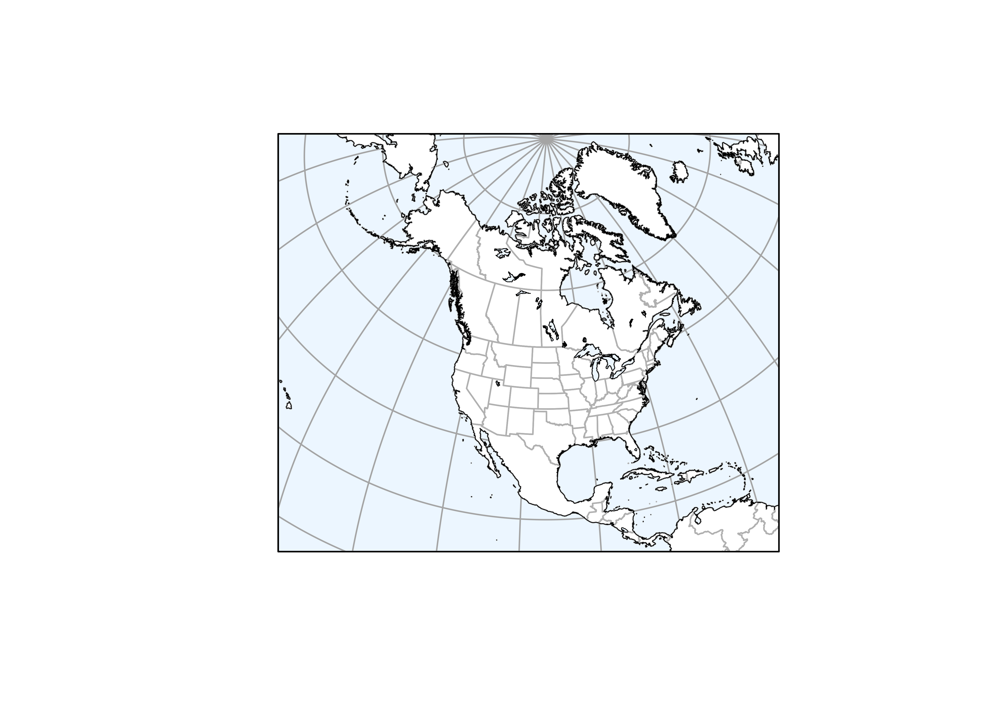
Read a pre-computed shaded relief file. This could also be crearted
by reading the na10km_v2 grid-point elevations and using the
shade function from the terra package. Note
that in this file, the coordinates are in km, and so they must be
multiplied by 1000.
# get 10km shade values
datapath <- "/Users/bartlein/Projects/RESS/data/csv_files/"
datafile <- "na10km_shade.csv"
shade <- read.csv(paste(datapath,datafile,sep=""))
str(shade)## 'data.frame': 282017 obs. of 5 variables:
## $ x : num -5770 -5760 -5720 -5720 -5720 -5720 -5710 -5710 -5710 -5710 ...
## $ y : num -820 -820 -860 -850 -840 -830 -870 -860 -850 -840 ...
## $ shade: num 0.691 0.691 0.31 0.334 0.559 ...
## $ lat : num 21.8 21.9 21.9 22 22 ...
## $ lon : num -160 -160 -160 -160 -160 ...## x y shade lat lon
## 1 -5770000 -820000 0.691208 21.83661 -160.1851
## 2 -5760000 -820000 0.691208 21.90175 -160.1023
## 3 -5720000 -860000 0.310095 21.90119 -159.5651
## 4 -5720000 -850000 0.333957 21.96637 -159.6163
## 5 -5720000 -840000 0.559432 22.03148 -159.6676
## 6 -5720000 -830000 0.956591 22.09651 -159.7191Convert the dataframe to a POINTS sf object
# convert to POINTS
shade_pixels <- st_as_sf(shade, coords = c("x", "y"), crs = na_crs)
shade_pixels## Simple feature collection with 282017 features and 3 fields
## Geometry type: POINT
## Dimension: XY
## Bounding box: xmin: -5770000 ymin: -4510000 xmax: 5e+06 ymax: 4480000
## Projected CRS: +proj=laea +lon_0=-100 +lat_0=50 +x_0=0 +y_0=0 +ellps=WGS84 +datum=WGS84 +units=m +no_defs
## First 10 features:
## shade lat lon geometry
## 1 0.691208 21.83661 -160.1851 POINT (-5770000 -820000)
## 2 0.691208 21.90175 -160.1023 POINT (-5760000 -820000)
## 3 0.310095 21.90119 -159.5651 POINT (-5720000 -860000)
## 4 0.333957 21.96637 -159.6163 POINT (-5720000 -850000)
## 5 0.559432 22.03148 -159.6676 POINT (-5720000 -840000)
## 6 0.956591 22.09651 -159.7191 POINT (-5720000 -830000)
## 7 0.481249 21.90038 -159.4309 POINT (-5710000 -870000)
## 8 0.081382 21.96570 -159.4820 POINT (-5710000 -860000)
## 9 0.123170 22.03093 -159.5332 POINT (-5710000 -850000)
## 10 0.850642 22.09609 -159.5846 POINT (-5710000 -840000)Read some predetermined (gray-scale) colors for the shading.
# read hillshade color numbers
colorfile <- "shade40_clr.csv"
shade_rgb <- read.csv(paste(datapath, colorfile, sep=""))
shade_clr <- rgb(shade_rgb)Set the (gray-scale) color numbers for each pixel:
Plot the shaded-relief colors and the various shape files. The
location of the text string was determined by plotting an initial
version of the map, and using the locator() function. The
cex=0.09 argument in plotting shade_pixels was
determined by trial and error. Redirect the output to a .pdf file.
pdf(file = "na_shade01b.pdf")
plot(st_geometry(na10km_bb), border = "black", col = "aliceblue")
plot(st_geometry(na10km_grat15_lines_proj), col = "gray70", add = TRUE)
plot(st_geometry(shade_pixels), pch=15, cex=0.09, col=shade_colnum, add = TRUE)
plot(st_geometry(na10km_admin0_poly_proj), lwd=0.2, bor="gray50", add=TRUE)
plot(st_geometry(na10km_can_lines_proj), lwd=0.2, col="gray50", add=TRUE)
plot(st_geometry(na10km_us_lines_proj), lwd=0.2, col="gray50", add=TRUE)
plot(st_geometry(na10km_lrglakes_poly_proj), lwd=0.2, bor="black", col="aliceblue", add=TRUE)
plot(st_geometry(na10km_coast_lines_proj), lwd=0.5, add=TRUE)
text(-5770000, 4620000, pos=c(4), offset=0.0, cex=1.0, "NA10km_v2 -- 10m Natural Earth Outlines")
plot(st_geometry(na10km_bb), add=TRUE)
dev.off()The resulting plot will look like this:
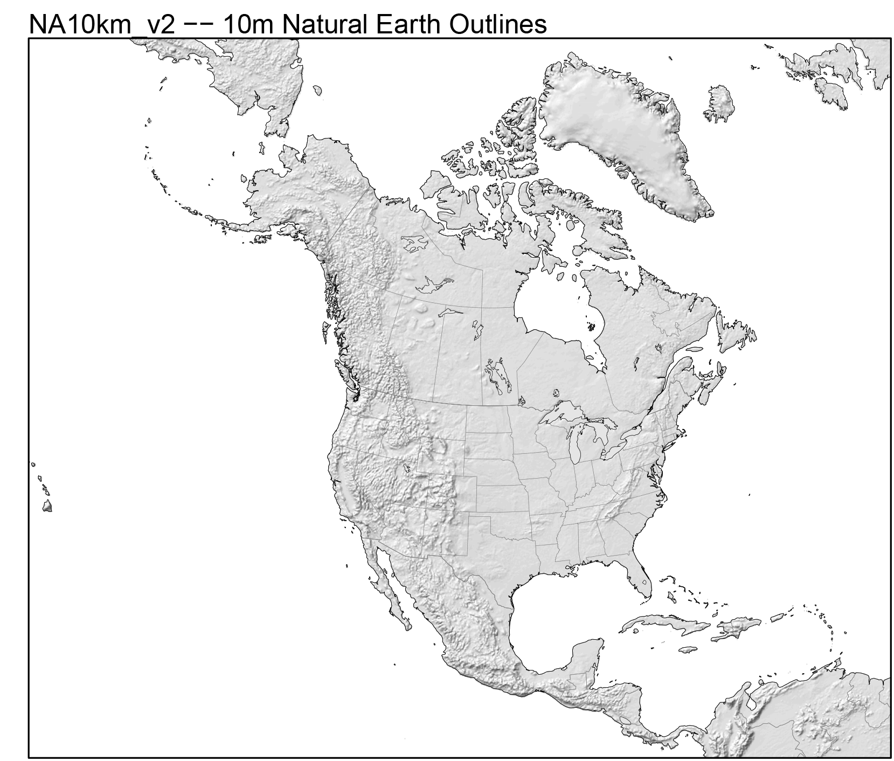
A final example describes mapping the western U.S. precipitation data
via the {ggplot2} package, as seen in the [Using
R: Examples]. Here, the basemap will be extracted from the
{maps} package (and later compared with the Natural Earth
shapefiles basemap versions).
Get oulines for the western states. the map() function
retrieves the outlines from the maps() package database,
and st_as_sf(), converts those to and (unprojected)
MULTIPOLYGONS sf object:
library(maps)
# get outlines of western states from {maps} package
wus_sf <- st_as_sf(map("state", regions=c("washington", "oregon", "california", "idaho", "nevada",
"montana", "utah", "arizona", "wyoming", "colorado", "new mexico", "north dakota", "south dakota",
"nebraska", "kansas", "oklahoma", "texas"), plot = FALSE, fill = TRUE))
head(wus_sf); tail(wus_sf)## Simple feature collection with 6 features and 1 field
## Geometry type: MULTIPOLYGON
## Dimension: XY
## Bounding box: xmin: -124.3834 ymin: 31.34652 xmax: -94.58387 ymax: 49.00508
## Geodetic CRS: +proj=longlat +ellps=clrk66 +no_defs +type=crs
## ID geom
## arizona arizona MULTIPOLYGON (((-114.6374 3...
## california california MULTIPOLYGON (((-120.006 42...
## colorado colorado MULTIPOLYGON (((-102.0552 4...
## idaho idaho MULTIPOLYGON (((-117.0266 4...
## kansas kansas MULTIPOLYGON (((-94.63544 3...
## montana montana MULTIPOLYGON (((-104.0491 4...## Simple feature collection with 6 features and 1 field
## Geometry type: MULTIPOLYGON
## Dimension: XY
## Bounding box: xmin: -124.6813 ymin: 25.9378 xmax: -93.53536 ymax: 49.00508
## Geodetic CRS: +proj=longlat +ellps=clrk66 +no_defs +type=crs
## ID geom
## oregon oregon MULTIPOLYGON (((-116.9292 4...
## south dakota south dakota MULTIPOLYGON (((-96.43452 4...
## texas texas MULTIPOLYGON (((-94.49792 3...
## utah utah MULTIPOLYGON (((-114.0472 4...
## washington washington MULTIPOLYGON (((-123.0198 4...
## wyoming wyoming MULTIPOLYGON (((-109.0511 4...## [1] "sf" "data.frame"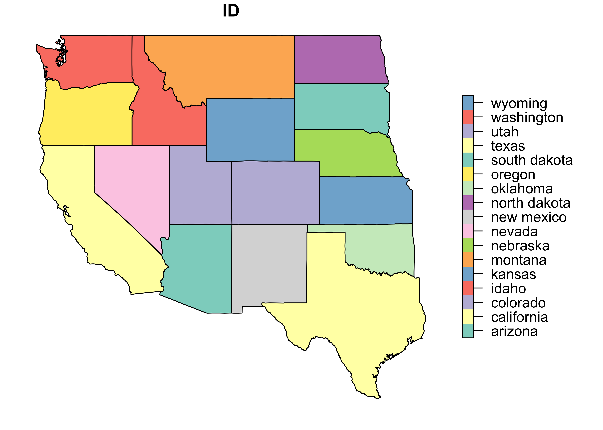
Here’s a quick ggplot2 map of the outlines:
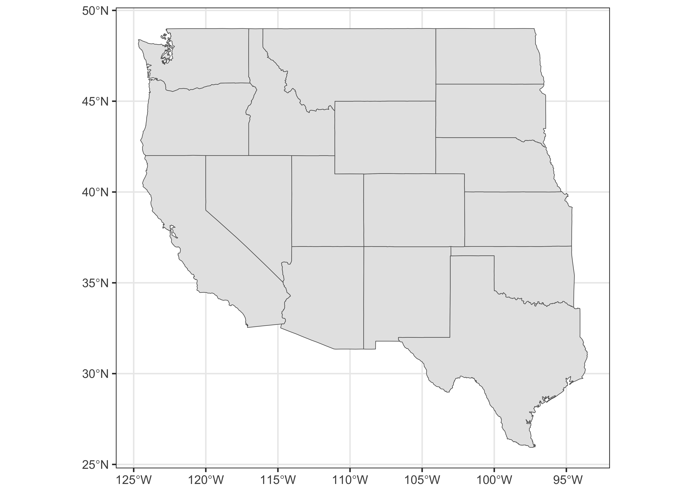
Project the outlines and a graticule (extracted from the
wus_sf object using st_graticule()):
# projection
laea = st_crs("+proj=laea +lat_0=30 +lon_0=-110") # Lambert Azimuthal Equal Area
wus_sf_proj = st_transform(wus_sf, laea)
plot(st_geometry(wus_sf_proj), axes = TRUE)
plot(st_geometry(st_graticule(wus_sf_proj)), axes = TRUE, add = TRUE)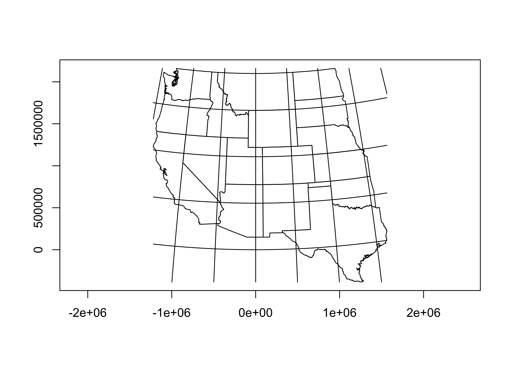
Note the coordinates are now in meters.
Here’s a ggplot2 version:
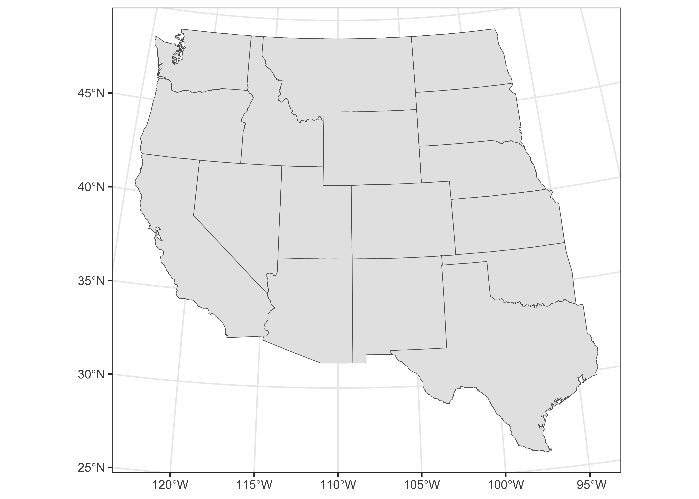
Get two other outlines from the maps database, one for
all of North America, and the other for the U.S.”
# get two other outlines
na_sf <- st_as_sf(map("world", regions=c("usa", "canada", "mexico"), plot = FALSE, fill = TRUE))
conus_sf <- st_as_sf(map("state", plot = FALSE, fill = TRUE))Because sf objects are basically dataframes, they can be
manipulated using some of the common R functions, like
rbind (row bind). Combine the na_sf and
conus_sf objects, and plot them out:
## Simple feature collection with 6 features and 1 field
## Geometry type: MULTIPOLYGON
## Dimension: XY
## Bounding box: xmin: -178.1945 ymin: 14.54541 xmax: 179.78 ymax: 83.11611
## Geodetic CRS: +proj=longlat +ellps=clrk66 +no_defs +type=crs
## ID geom
## Canada Canada MULTIPOLYGON (((-59.7876 43...
## Mexico Mexico MULTIPOLYGON (((-91.68369 1...
## USA USA MULTIPOLYGON (((-155.5813 1...
## alabama alabama MULTIPOLYGON (((-87.46201 3...
## arizona arizona MULTIPOLYGON (((-114.6374 3...
## arkansas arkansas MULTIPOLYGON (((-94.05103 3...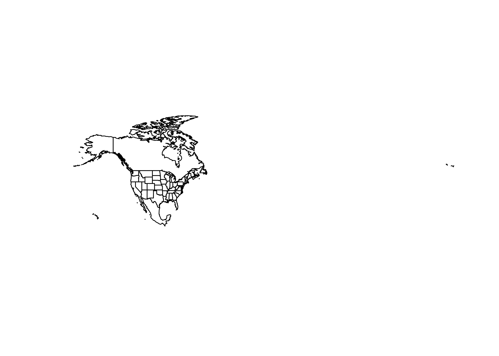
Note that the map is slightly strange–the Aleutians cross the dateline (180W), so the map wraps around.
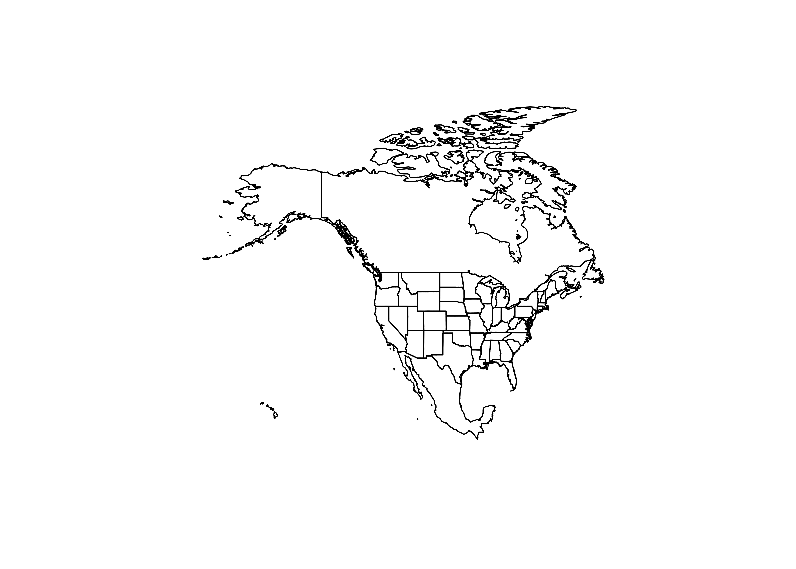
Project the additional outlines:
# project the other outlines
na_sf_proj = st_transform(na_sf, laea)
conus_sf_proj = st_transform(conus_sf, laea)
na2_sf_proj = st_transform(na2_sf, laea)# plot everthing so far
plot(st_geometry(na_sf_proj), col = "red", axes = TRUE)
plot(st_geometry(wus_sf_proj), axes = TRUE, add = TRUE)
plot(st_geometry(st_graticule(wus_sf_proj)), add = TRUE)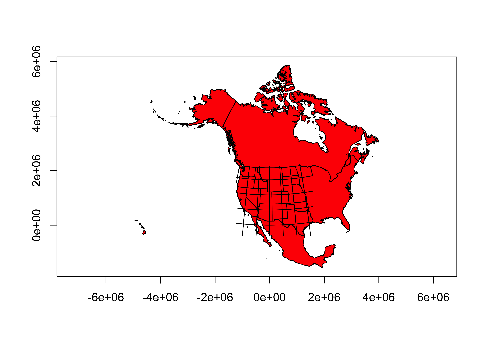
# pratios
csv_path <- "/Users/bartlein/Projects/RESS/data/csv_files/"
csv_file <- "wus_pratio.csv"
wus_pratio <- read.csv(paste(csv_path, csv_file, sep = ""))Make an sf object:
# make an sf object
wus_pratio_sf <- st_as_sf(wus_pratio, coords = c("lon", "lat"))
plot(st_geometry(wus_pratio_sf), pch=16, cex = 0.5)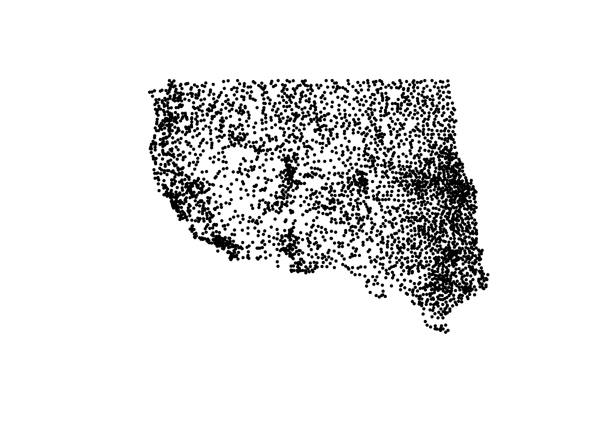
Recode the the pjulpann ratio to a factor:
# recode pjulpjan to a factor
library(classInt)
wus_pratio$pjulpjan <- wus_pratio$pjulpann/wus_pratio$pjanpann # pann values cancel out
cutpts <- c(0.0, .100, .200, .500, .800, 1.0, 1.25, 2.0, 5.0, 10.0, 9999.0)
pjulpjan_factor <- factor(findInterval(wus_pratio$pjulpjan, cutpts))
head(cbind(wus_pratio$pjulpjan, pjulpjan_factor, cutpts[pjulpjan_factor]))## pjulpjan_factor
## [1,] 0.43465046 3 0.2
## [2,] 1.15409836 6 1.0
## [3,] 0.05609915 1 0.0
## [4,] 0.26222597 3 0.2
## [5,] 0.05042017 1 0.0
## [6,] 0.14257556 2 0.1Here’s an (unprojected) map of the precipitation ratio:
## ggplot2 map of pjulpjan
ggplot() +
geom_sf(data = wus_sf, fill=NA) +
scale_color_brewer(type = "div", palette = "PRGn", aesthetics = "color", direction = 1,
labels = c("0.0 - 0.1", "0.1 - 0.2", "0.2 - 0.5", "0.5 - 0.8", "0.8 - 1.0",
"1.0 - 1.25", "1.25 - 2.0", "2.0 - 5.0", "5.0 - 10.0", "> 10.0"),
name = "Jul:Jan Ppt. Ratio") +
labs(title = "Precipitation Seasonality", x = "Longitude", y = "Latitude") +
geom_point(aes(wus_pratio$lon, wus_pratio$lat, color = pjulpjan_factor), size = 1.5 ) +
theme_bw()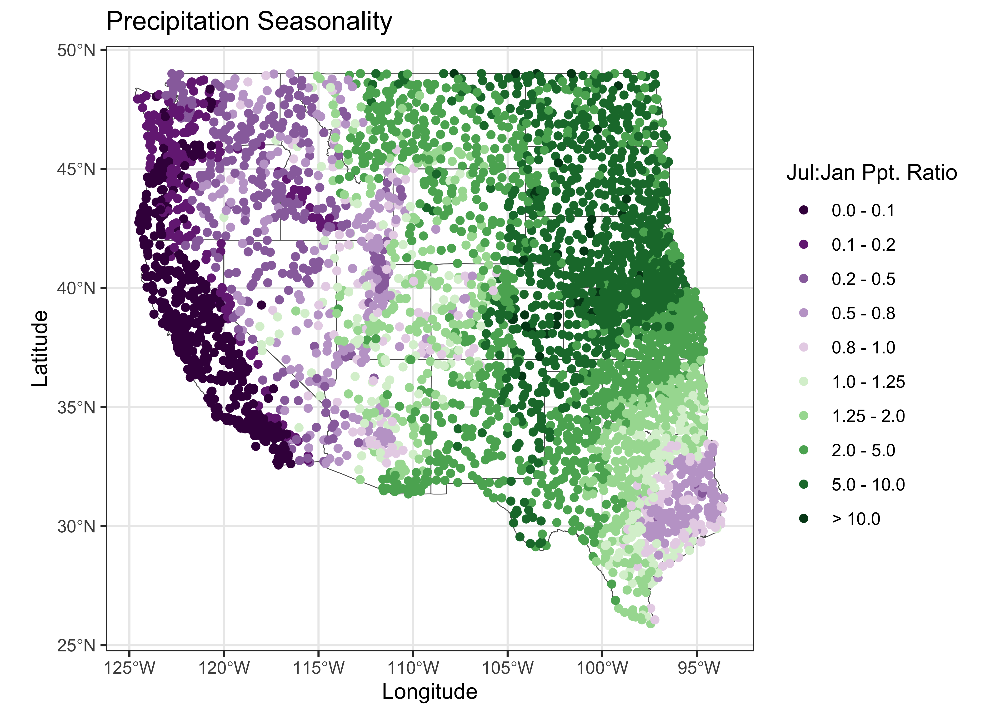
Project the precipitation ratio point
# projection
st_crs(wus_pratio_sf) <- st_crs("+proj=longlat")
laea = st_crs("+proj=laea +lat_0=30 +lon_0=-110") # Lambert equal area
wus_pratio_sf_proj = st_transform(wus_pratio_sf, laea)Plot the projected points:
# plot the projected points
plot(st_geometry(wus_pratio_sf_proj), pch=16, cex=0.5, axes = TRUE)
plot(st_geometry(st_graticule(wus_pratio_sf_proj)), axes = TRUE, add = TRUE)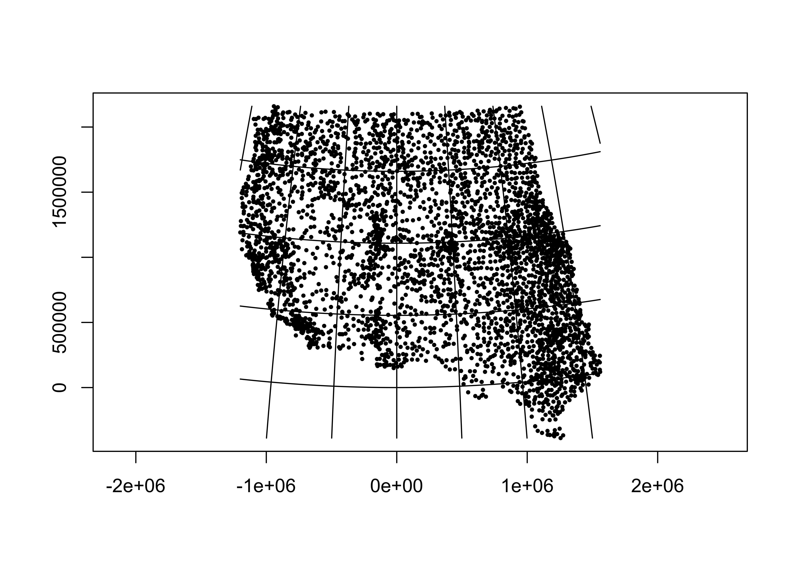 Plot everything
# ggplot2 map of pjulpman projected
ggplot() +
geom_sf(data = na2_sf_proj, fill=NA, color="gray") +
geom_sf(data = wus_sf_proj, fill=NA) +
geom_sf(data = wus_pratio_sf_proj, aes(color = pjulpjan_factor), size = 1.0 ) +
scale_color_brewer(type = "div", palette = "PRGn", aesthetics = "color", direction = 1,
labels = c("0.0 - 0.1", "0.1 - 0.2", "0.2 - 0.5", "0.5 - 0.8", "0.8 - 1.0",
"1.0 - 1.25", "1.25 - 2.0", "2.0 - 5.0", "5.0 - 10.0", "> 10.0"),
name = "Jul:Jan Ppt. Ratio") +
labs(x = "Longitude", y = "Latitude") +
guides(color = guide_legend(override.aes = list(size = 3))) +
coord_sf(crs = st_crs(wus_sf_proj), xlim = c(-1400000, 1500000), ylim = c(-400000, 2150000)) +
labs(title = "Precipitation Seasonality", x = "Longitude", y = "Latitude") +
theme_bw()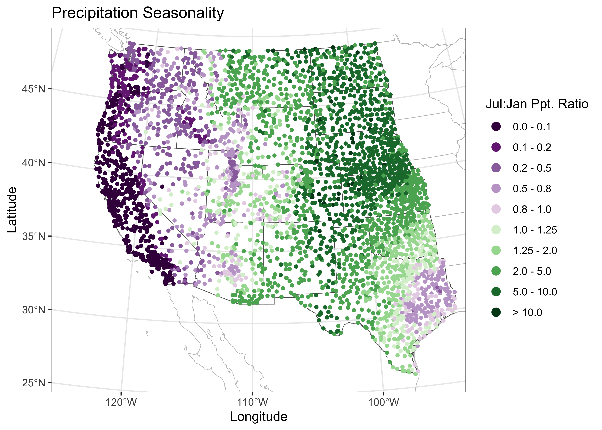
The guides() function expands the size (diameter) of the
legend key (size = 3) leaving the points at their original
size.
While we have two differnet sources of shapefiles in the environment
(if all of the code chunks have been run), it would be useful to compare
them. Copy the following code into a script window. Then run the script
a line at a time. The first line will just set up a plotting region.
Then the next three lines will plot in turn the Natural Earth outlines
of the coastlines and the U.S. and Canada. Note that the outlines
overlay one another exactly (there’s no black visible). Then
run the next two lines, one at a time to plot {maps}
package outlines. Notice what happens along the coast, and in particular
around Vancouver Is. and the Puget Sound. The fact that the Natural
Earth outlines are still visible, as are the separate
{maps} package outlines implies that the various shape
files are not coregisterd.
# outlines
# from the Natural Earth shapefile collection
plot(NULL, NULL, xlim = c(-130.0, -110), ylim = c(40.0, 50.0),
xlab = "Longitude", ylab = "Latitude")
plot(st_geometry(coast_lines_sf), border = "black", add = TRUE)
plot(st_geometry(can_poly_sf), border = "purple", add = TRUE)
plot(st_geometry(us_poly_sf), border = "magenta", add = TRUE)
# from the maps package
plot(st_geometry(na_sf), border = "red", add = TRUE)
plot(st_geometry(wus_sf), border = "blue", add = TRUE)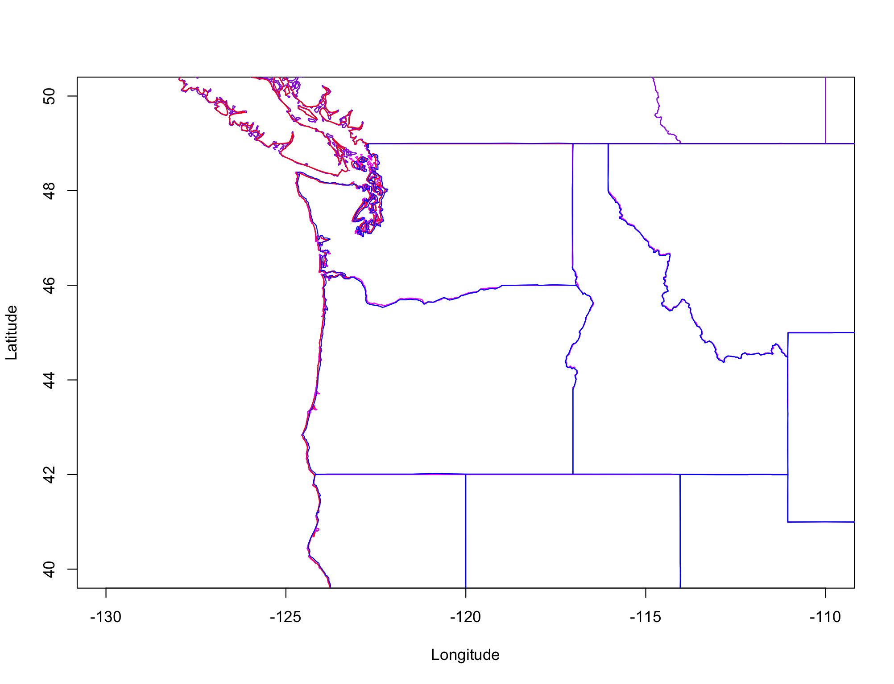 Do the same thing for the following code, which plots the vertices along the MULTILINESTRINGS.
# verticies (points)
# from the Natural Earth shapefile collection
plot(NULL, NULL, xlim = c(-130.0, -110), ylim = c(40.0, 50.0),
xlab = "Longitude", ylab = "Latitude")
points(st_coordinates(coast_lines_sf), col = "black", pch = 16, cex = 0.4)
points(st_coordinates(can_poly_sf), col = "purple", pch = 16, cex = 0.5)
points(st_coordinates(us_poly_sf), col = "magenta", pch = 16, cex = 0.5)
# from the maps package
points(st_coordinates(na_sf), col = "red", pch = 16, cex = 0.5)
points(st_coordinates(wus_sf), col = "blue", pch = 16, cex = 0.5)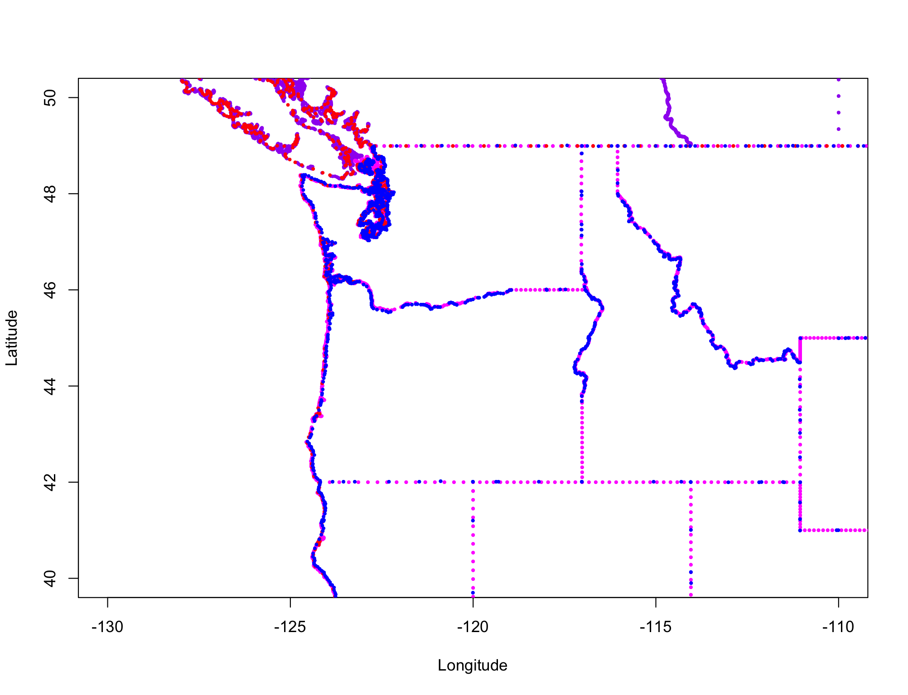
Ugh!